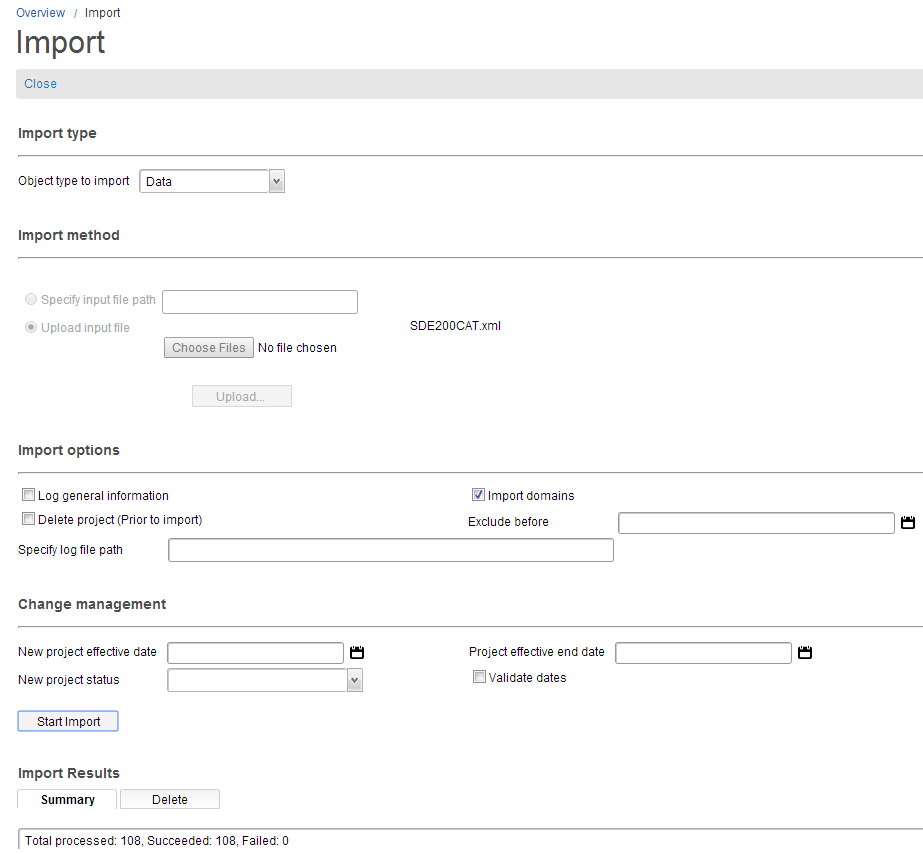

Import CatalogThe import functionality allows you to import data, such as images, attachments, and files into Catalog. Importing a catalog converts the date from GMT to local time, based on the timezone that you are in. To import catalog related data, follow these steps:
 Notes:
Import Catalog from the Command LineYou can import your catalog from the command line in Windows and UNIX. A short cut command can be found in the <installation_ folder>\designer\env\catalogImport.sql. The catalog import syntax is as follows: @echo off
if ""%1""=="""" goto echoSyntax
set CWOC_CLASSPATH=C:\EOC Product\14.x\14449
set CLASSPATH=%CWOC_CLASSPATH%\designer\Designer.jar;^
%CWOC_CLASSPATH%\lib\oracle\ojdbc6.jar;^
%CWOC_CLASSPATH%\lib\oracle\orai18n.jar;^
%CWOC_CLASSPATH%\lib\oracle\orai18n-mapping.jar;^
%CWOC_CLASSPATH%\lib\ilog\sdworkflowmodeler.deployed.jar;^
%CWOC_CLASSPATH%\lib\jdic\JDICplus.jar;^
%CWOC_CLASSPATH%\lib\axis2\addressing-1.41.mar;^
%CWOC_CLASSPATH%\lib\axis2\rampart-1.5.mar;^
%CWOC_CLASSPATH%\lib\axis2\mex-1.4.1.mar;^
%CWOC_CLASSPATH%\lib\axis2\wstx-asl-3.2.4.jar;^
%CWOC_CLASSPATH%\lib\axis2\rampart-core-1.5.jar;^
%CWOC_CLASSPATH%\lib\axis2\rampart-policy-1.5.jar;
set JAVA_OPTS=-Xms1024m -Xmx1024m -XX:MaxPermSize=128m -Dcom.conceptwave.licenseDir="%CWOC_CLASSPATH%"\designer\env -Dcom.conceptwave.modules.path="%CWOC_CLASSPATH%"\modules
"C:\Program Files\Java\jdk1.7.0_51\bin\java" %JAVA_OPTS% -cp "%CLASSPATH%" com.conceptwave.servicedesigner.ServiceDesigner -catalogimport %*
goto end
:echoSyntax
echo ----------------------------------------------------------------
echo Syntax: catalogImport [-logFile logFile] username=? [password=?] server_url=? import_file=?
echo [exclude_before=?] [log_general_info=?] [import_domains=?] [import_codetable=?]
echo [deleteProjectBeforeImport=?] [validateDates=?] [newStatus=?] [newProjectEffectiveDate=?]
echo [maintainOffset=?] [updateFutureDates=?] [moveEndDatedObjects=?] [effectiveEndDate=?]
echo ----------------------------------------------------------------
echo Note: password could be input from console.
echo log_general_info: default is true.
echo import_domains: default is true.
echo exclude_before date format: yyyy-MM-dd.
echo ----------------------------------------------------------------
echo Example: catalogImport username=a password=b server_url=http://server:8080/cwf import_file=c:/temp/myfile.xml exclude_before=2010-01-01 log_general_info=true import_domains=false
echo catalogImport username=a server_url=http://server:8080/cwf import_file=c:/temp/myfile.xml
echo catalogImport username=a password=b server_url=http://server:8080/cwf import_file=c:/temp/myfile.xml import_domains=true
echo catalogImport username=a password=b server_url=http://server:8080/cwf import_file=C:/temp/ACC_CAN_TYPE.xml import_codetable=true log_general_info=false import_domains=false
echo catalogImport username=a password=b server_url=http://server:8080/cwf import_file=C:/temp/ import_codetable=true log_general_info=false import_domains=false deleteProjectBeforeImport=true
validateDates=false newStatus=ACT newProjectEffectiveDate=2013-05-30 maintainOffset=true updateFutureDates=false moveEndDatedObjects=false effectiveEndDate=2013-04-22
echo catalogImport username=a server_url=http://server:8080/cwf import_file=c:/temp/myfile.zip
echo ----------------------------------------------------------------
:end
Where:
Notes:
|